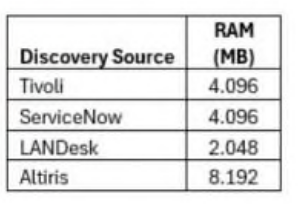
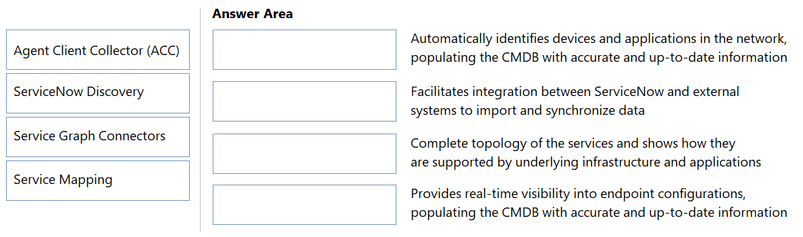
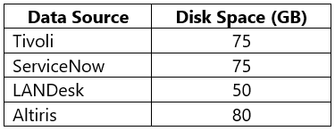
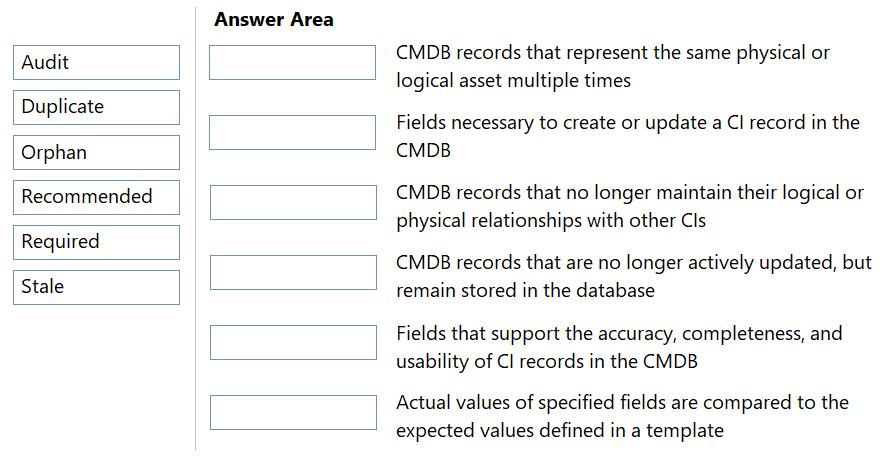
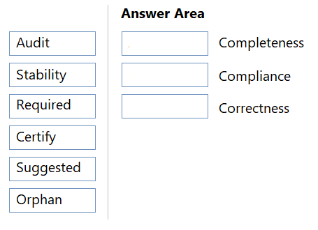
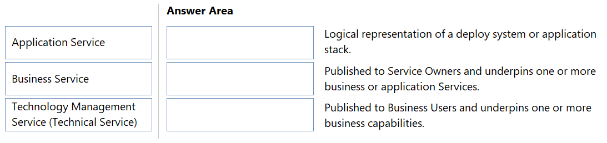
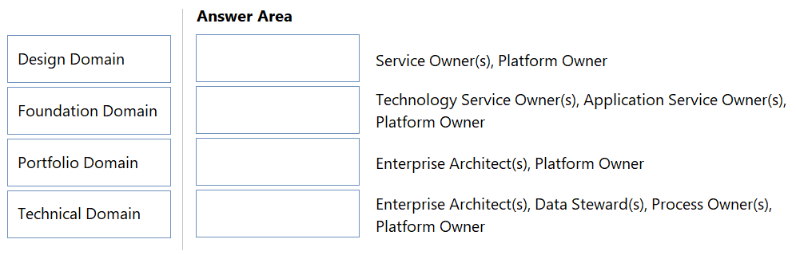
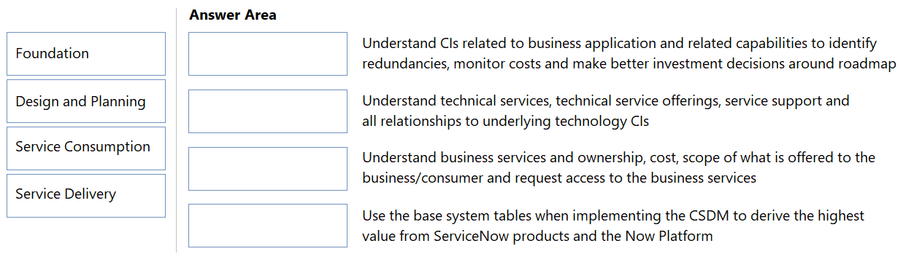

Question 1

The CMDB Administrator has set-up two Dynamic Reconcilliation Rules within the ServiceNow Production Instance. The ‘Server’ class has a Dynamic Reconciliation Rule of largest value for the RAM field. The ‘Windows Server’ class has a Dynamic Reconciliation Rule of most reported for the RAM field. Given the above data in the Multisource CMDB, which value would be added to the CMDB for RAM for a ‘Server’ CI?
Question 2

DRAG DROP -
Drag and drop the application service type to the best description.

Question 3
A new custom class is needed to reflect a new application being managed in the CMDB.
Which roles are minimally needed to add this custom CI class?
Question 4
What is the relationship between an application and a server?
Question 5
User endpoint devices are imported into the CMDB and populate the ‘Assigned to’ [assigned_to] field on the Computer [cmdb_ci_computer] CI. The Asset team puts in a request for the Configuration Analysts to populate the ‘Assigned to’ field on the related Asset.
What action does a Configuration Analyst take to achieve this in an automated way?
Question 6
A CMDB Administrator needs to create a new CI class for the Internet of Things (IoT) Sensor in ServiceNow.
What are the recommended practices for this specific activity? (Choose two.)
Question 7
A Change Manager aims to streamline ITSM processes by automatically populating fields on the Change form when a CI is selected. The Configuration Management team is working to ensure that the Change Group field is populated for all managed CIs.
As a result, which base system field on the incident form will be automatically populated after selecting a CI?
Question 8
A CMDB Administrator has built a number of Technology Management Service Offerings (Technical Service Offerings) based on Dynamic CI Groups to better maintain group alignment for the member CI. Which Groups are synced to CIs from the offering that has a relationship to a Dynamic CI Group? (Choose two.)
Question 9
A Data Center Manager is working with the CMDB CI Class Manager to define the relationship between Application Servers and the Applications they host. The company has multiple Application Servers that host one or more Applications. Which describes the relationship between the Application Server table ([cmdb_ci_app_server]) and the Application table ([cmdb_ci_appl])?
Question 10
An Asset Manager wants to ensure that Asset records and CI records are kept synchronized automatically. How does the Manager do this? (Choose two.)
Question 11
The CMDB Configuration Management team has successfully developed a healthy and trusted CMDB. They have integrated discovered infrastructure data, accurately referenced non-discoverable data (such as change and support group information), and made the CMDB service-aware using Service Mapping.
Which field on an Incident form is automatically populated after a CI is selected that references an appropriate support group?
Question 12
A CMDB Administrator needs to identify which attributes have been created specifically for the Windows Server class. Which tab in the Attributes section is used?
Question 13
A CMDB Administrator wants only the CIs of Principal Classes to appear in CI reference fields, for example the CI reference fields accessible from an Incident Form.
Where does the CMDB Administrator designate Principal Classes?
Question 14
A Configuration Management Process Owner is preparing solution options for presentation to the technical governance board for ingesting custom CIs to the CMDB. The solution needs to align with best practice, minimize the cost of future work (technical debt) and ensure compliance with future upgrades. Which solutions accomplish this? (Choose two.)
Question 15
A CMDB Administrator needs to import external data into the CMDB. As the CMDB Administrator wants to reduce the risk for creating duplicates and to update information from unauthorized sources, it has to be ensured that the Identification and Reconciliation API will not be bypassed.
What is the recommended method to import data into the CMDB utilizing the Identification and Reconciliation API?
Question 16
A Configuration Manager has configured a multiple data sources which are all authorized to update the same class and the same set of class attributes in the CMDB.
What can the Configuration Manager do to control which data source should be authoritative source of truth for a specific class of set of class attributes?
Question 17
Which CMDB 360/Multisource CMDB the Dynamic Reconciliation Rules will also be enabled. Based on the request of the management, a CMDB Administrator has to set up multiple Dynamic Reconciliation Rules.
Which are available ‘Dynamic Rule Types’ within the ‘Create Reconciliation Rule’ wizard? (Choose two.)
Question 18
The following identification rule for a CI class has been defined:
Two new CI records are imported into the hardware class of the CMDB:
CI1: The name of this CI record matches the name of an existing CI record in the CMDB.
CI2: The IP address of this CI record matches the IP address of an existing CI record in the CMDB.
Which is correct based on the identification rule and the imported CI records?
Question 19
A customer wants recently imported server records to be automatically reclassified into more specific CMDB classes after being discovered using ServiceNow Discovery.
During the discovery process, if existing Server [cmdb_ci_server] records are reclassified into the Linux [cmdb_ci_linux_server] and Windows Server [cmdb_ci_win_server] classes, which reclassification operation occurred?
Question 20
A Platform Data Owner wants to improve data quality with a few reconciliation rules across the five discovery sources that are being used. The Data Owner knows the best option is to include CMDB 360/Multisource CMDB to manage and monitor discovery sources, but the company currently does not have a license for ITOM Discovery that is required for CMDB 360/Multisource CMDB.
What can the Data Owner do in this case?
Question 21
Which ServiceNow solution creates automatic relationships?
Question 22
The Apache Web Server Identification Rule is configured with the following Criterion attributes:
Class -
Configuration file -
Version -
Yesterday, an Apache Web Server CI was discovered as part of Service Mapping. Today, the application owner upgraded Apache to a different version and reran discovery of the service.
What will happen in the CMDB?
Question 23
Configuration Management requires an accurate inventory of devices to be reflected in the CMDB.
Which are common use cases for using Agent Client Collector (ACC)? (Choose two.)
Question 24
An organization needs to maintain non-discoverable attributes, such as warranty expiration dates, for hardware CIs. These attributes are not updated by automated discovery tools.
What method ensures these attributes are accurately maintained for all CIs?
Question 25

DRAG DROP -
ServiceNow provides a suite of CMDB management tools designed to effectively ingest, manage, and maintain CIs and relationships.
Drag and drop the design architecture to its management tool.
Some options may not apply.

Question 26
When integrating data into the CMDB using import sets and transform maps, which type of script is added to ensure the data is processed through the IRE?
Question 27

The following Reconciliation Rules were configured for ServiceNow, Altiris, and SCCM: Which are true? (Choose two.)
Question 28
A CMDB Administrator has installed a Service Graph Connector and customized a script transform.
What will happen on subsequent upgrades if the default definition of the script transform is updated?
Question 29
A CMDB Administrator would like to minimize stale CIs in the CMDB. Which CMDB Health Dashboard scorecard displays this information?
Question 30

DRAG DROP -
Drag and drop the CMDB Health Dashboard metric to the description.

Question 31
A CMDB Administrator is asked to clean up the CMDB duplicates.
What is the preferred way to manage this task?
Question 32
A CMDB Administrator identifies duplicate CIs. One was created by a manual import, and the other one was created by automated discovery. The discovered CI has the latest IP address, while the manually imported CI has an accurate relationship to a critical business application.
How does the Administrator use the Duplicate CI Remediator to resolve this issue?
Question 33
A CMDB Administrator wants to remove all Linux Servers in the organization that have not been updated in six months.
Which recommended action does the Administrator take in Data Manager?
Question 34
The CMDB Administrator group aims to display meaningful results on the CMDB Health Dashboard Compliance Scorecard for server records that are not on the latest patch.
What must be configured to achieve this goal?
Question 35
A CMDB Administrator has been tasked with gathering information for a presentation to leadership. The Administrator needs to provide Duplicate CI, Orphan CI, and Stale CI metrics.
Which scorecard provides this information on the CMDB Health Dashboard?
Question 36
What is the difference between Data Certification and Attestation policies when managing a CI?
Question 37
A CMDB Administrator is reviewing the health of the CMDB and notices a large percentage of the Hardware CIs are missing serial numbers. The Administrator is concerned this may cause duplicate CIs and would like to resolve the issue in a timely manner. What structured guidelines provided by ServiceNow are available to troubleshoot and resolve the issue?
Question 38
Configuration Management needs to ensure data quality for all CIs in the CMDB. What areas of data quality for CIs are in the CMDB Health Dashboard? (Choose two.)
Question 39
A CMDB Configuration Manager is reviewing the metrics on the CMDB Health Dashboard’s Correctness Scorecard for the Server class which consists of a total of 60,000 servers in the CMDB.
For the Duplicate metric, it shows Healthy CIs/Evaluated as 59,000/60,000.
For the Orphan metric, it shows Healthy CIs/Evaluated as 45,000/50,000.
Which configuration explains the difference in the scope of Server CIs (60,000 vs.50,000) evaluated between the two metrics?
Question 40
CMDB class owners are receiving tasks under the ‘My Work’ tab in the CMDB Workspace. Which CMDB management tool is generating these tasks?
Question 41
What ensures data volume in the CMDB manageable?
Question 42
A CMDB Manager wants to improve data quality using the CMDB Health Dashboard.
What needs to happen to generate CMDB health scores?
Question 43
The CMDB Configuration Manager is using the CI Class Manager to manage the group ownership of CI classes and needs to leverage the ownership value specified in the CI Class Manager.
When configuring a CMDB Data Manager policy, which group reference field should be set?
Question 44
The CMDB Configuration Management team wants to manage de-duplication tasks generated from data ingested into the CMDB via the Identification and Reconciliation Engine (IRE).
In which area of the CMDB Workspace can they locate these de-duplication tasks?
Question 45
Which type of CMDB Data Manager policy creates tasks that allow the assigned individual to update fields on the CI record?
Question 46

DRAG DROP -
A new ServiceNow customer is assembling a Configuration Management team to support their CMDB.
Drag each role to its corresponding job description.

Question 47

DRAG DROP -
A CMDB Administrator seeks to understand the available tools for preventing, addressing, and remediating duplicate CIs.
Drag and drop each feature with the corresponding outcome.
Some options may not apply.

Question 48
A Configuration Manager needs to leverage a policy type to automate the creation and assignment of tasks to validate the existence of CIs.
Which policy type should be used to accomplish this goal?
Question 49
Which is a purpose or requirement of CMDB Data Manager in ServiceNow?
Question 50
A CMDB Data Manager needs to access the ServiceNow platform to create, publish, and manage policies that automate and govern CI lifecycle operations, ensuring the CMDB remains healthy and efficient.
Where can the Data Manager do this?
Question 51

DRAG DROP -
A manufacturing organization has implemented Incident Management in ServiceNow and wants to integrate additional products to enhance its functionality.
Drag each ServiceNow product to the value it brings to supporting Incident Management.

Question 52
Where can a CMDB 360/Multisource CMDB Saved Query be viewed and created in the CMDB Workspace?
Question 53
An organization is changing data centers and needs to know the consequences of the planned changes.
How can Application Service mapping be used as part of Change Management?
Question 54
Where can an administrator perform Natural Language Queries (NLQ)?
Question 55
A healthcare provider faces a critical incident affecting its patient management system. The provider needs to determine the users impacted to mitigate disruption effectively.
Which CSDM-related data should they leverage?
Question 56
A Configuration Manager wants to use the Unified Map.
Where would it be accessed?
Question 57
A service owner is using Unified Map to understand to composition of a service but wants to filter out irrelevant information.
Which options are available to the service owner from the filter panel? (Choose two.)
Question 58
A CMDB Administrator wants to create a CMDB query to find all databases located in Seattle that are connected to application services. They also want to include incidents related to those databases.
Which actions does the company take to build this query? (Choose two.)
Question 59
In a company there is a need to understand the CSDM maturity level needed. Different stakeholders listed a number of use cases that they expect over time.
Which use case requires information objects?
Question 60
A Platform Owner is collaborating with stakeholders in the manufacturing industry to align their CIs with the CSDM 5 framework. They need to map production line monitoring systems to the appropriate CSDM domain.
Which CSDM 5 domain does the Platform Owner use?
Question 61
A development team is working on a project and an application will be deployed to many servers. There will be several security requirements that must be checked to adhere to lawful compliance because the application will be holding customer personal data (PII and PCI).
Where in the CSDM does the development team look to store the information that will be used to satisfy the audits?
Question 62
A customer’s CMDB is aligned to the CSDM Walk stage.
What benefit is provided by the CMDB?
Question 63

DRAG DROP -
Some steps need to be taken to transition from using different status attributes in the CMDB to life cycle objects.
Drag and drop the objectives/attributes to the description.

Question 64
A CMDB Administrator wants to improve data quality related to the CSDM.
Which action should the Administrator take to meet this goal?
Question 65
According to the Common Service Data Model (CSDM), a server team is requesting a catalog item be created for infrastructure upgrade requests.
Which role is involved in initiating the request and defining requirements?
Question 66
A CMDB Administrator is evaluating whether to monitor the metrics provided on the CMDB Foundation Dashboard.
Which benefits support the decision to continually monitor the results on this dashboard? (Choose two.)
Question 67
The Configuration Manager is preparing the justification to utilize the CMDB Data Foundations Dashboard.
Which benefits align with the usage of this dashboard? (Choose two.)
Question 68
A Change Manager wants to gain value from CSDM.
How will the Change Management process benefit from CSDM? (Choose two.)
Question 69
Which are business values of CMDB? (Choose two.)
Question 70
A CMDB Administrator is implementing a Vulnerability Response or Security Incident Response and needs to ensure customers have enough context to estimate risk and set task priorities.
Which Get Well Playbook from the CSDM Data Foundation Dashboard helps with this?
Question 71
A CMDB Administrator wants to run the Services Have Owners Identified playbook to remediate the issues shown in the CMDB Data Foundations Dashboard.
Which remediation plays would be used? (Choose two.)
Question 72
A Configuration Management Governance team is transitioning from utilizing legacy CMDB status fields to CSDM life cycle status fields.
Which table can be modified?
Question 73
A CMDB Administrator, viewing the CMDB Data Foundations Dashboard, notices the Unique Locations Result percentage low.
What is the recommended process from the associated playbook to correct this issue?
Question 74

DRAG DROP -
A CMDB Owner starts on the CSDM journey and needs to become familiar with the CSDM domains.
Drag the CMDB objects to the correct CSDM domains.

Question 75
A Configuration Manager is planning the implementation of the CMDB.
Which is the prescribed CSDM rollout order?
Question 76
A Configuration Manager is managing a CI class in the CMDB. The identification rule(s) needs an update. Where can the Configuration Manager view and configure the existing identification rule(s) for the class? (Choose two.)
Question 77
A CMDB Administrator wants to ensure that only relevant CIs from managed classes will be shown on Incident, Problem, and Change records. Which checkbox needs to be checked in the CI Class Manager for the CMDB Administrator to achieve the requested result?
Question 78
A Configuration Management team has decided to start taking advantage of the CMDB 360/Multisource CMDB functionality. Which system property must be enabled?
Question 79
A CMDB Administrator is creating technical documentation for stakeholders, which includes a list of attributes, Identification and Reconciliation Engine (IRE) rules, and suggested relationships for several classes. Which central location does the CMDB Administrator use to collect this information?
Question 80
A CMDB Administrator wants to configure IRE rules for the CMDB. The CMDB Administrator opens CI Class Manager and sees the Health Inclusions Rules tab available under a CI Class. How are these rules utilized by the IRE?
Question 81
A Windows administration team wants a grouping of CIs using CMDB groups. Which methods can be used? (Choose two.)
Question 82
A CMDB Administrator is managing group data from both the CI Class Manager and a Technical Service Offering for a specific class. Cl Class Manager: - Managed by Group = Enterprise IT Services Technical Service Offering: - Managed by Group = Windows Support - Change Group = Change Management Team What would be the Managed By Group for CIs from this class based on the configured values?
Question 83
A Configuration Manager wants to manage manually maintained data attributes of CIs. Which group values are automatically synchronized on CIs using Technology Management Offerings (Technical Service Offerings) and dynamic CI groups? (Choose two.)
Question 84
A CMDB Administrator is tasked with managing the CMDB and needs to define a new CI class to track a new type of equipment that has not been seen before. Which action adds a new CI class and ensures it integrates properly with the existing CMDB structure?
Question 85
A Configuration Manager needs to restrict the number of classes available in a Configuration Item reference field on an incident form. How does the Manager set Principal Classes?
Question 86
A CMDB Administrator aims to utilize CSDM life cycle field mappings to better align with CSDM best practices. What is the next step to take after selecting the Enable Life Cycle Sync button?
Question 87
A CMDB Administrator needs to set a CI Class as a Principal Class. Which CI Class Manager tab would need to be accessed?
Question 88
A ServiceNow Administrator needs to create multiple new classes in the CMDB but wants to follow ServiceNow's best practices for naming CMDB tables to prevent technical debt. Which is the starting prefix for all custom CMDB tables?
Question 89
A Configuration Management team needs to prevent duplicate server records to avoid confusion among users. Server records are identified when they are processed via the Identification and Reconciliation Engine (IRE) using the configured identification rules. Where would these rules be configured?
Question 90
A CMDB Administrator notices that CIs do not have a support group. How can the support group be automatically populated and maintained on the CI record?
Question 91
Using CI Class Manager, the Tomcat identification rule has the following criterion attributes configured: • Class • Install Directory Which identifier entry configuration option must be checked to attempt a match using the Application identification rule if no match is found using the Tomcat identification rule?
Question 92
A CMDB CI Class Owner has been asked to change the icon for the UNIX Server class. Which CI Class Manager tab can the owner use to change the icon for the class?
Question 93
A Configuration Manager is reviewing the life cycle of CIs to ensure data accuracy, consistency, and relevance. The manager reviews the legacy status values and their equivalent CSDM life cycle stage and life cycle stage status values. Where are these reviewed?
Question 94
An organization is updating the CMDB to include new asset types like IoT devices. Relevant CI classes need to be added and outdated ones need to be removed from the Principal Class filter to ensure accurate display in ITSM processes. Which roles are needed to add or remove classes? (Choose two.)
Question 95
An IT group has a requirement to upgrade all the Windows servers. There is a Dynamic CI Group containing all the Windows servers. What happens to the Dynamic CI Group when it is referenced from the Configuration Item field on a Change form?
Question 96
A CMDB Administrator is working in the CI Class Manager on the Basic Info tab. How can the class be set as a Principal Class?
Question 97
A global enterprise integrates data from multiple discovery sources such as ServiceNow Discovery, SCCM, AWS, and manual uploads to populate its CMDB. However, each discovery source categorizes the same CIs differently, leading to duplicate records and inconsistencies across the system. As a result, the CMDB team is struggling with data accuracy and standardization. What actions does the CMDB team take to resolve the issue? (Choose two.)
Question 98
A CMDB CI Class Owner responsible for the Windows Servers needs to manage the Windows Server class. Which CI Class Manager feature will help the CI Class Owner streamline this task?
Question 99
The Change Management team in an organization wants to implement a Change across multiple CIs at the same time. Which field on the Change Request form needs to be populated with a dynamic CI group?
Question 100
A CMDB Administrator needs to configure a new application identification rule that considers the potential for the same application installed more than once on the same server. Which is the best choice of a criterion attribute?
Question 101
A Windows server is reclassified from the Server table [cmdb_ci_server] to the Windows Server table [cmdb_ci_win_server] when processed through the Identification and Reconciliation Engine (IRE). Which process occurred?
Question 102
An organization utilizes multiple data sources to update its CMDB, each assigned a different priority level. A high-priority data source is scheduled to update server records weekly. However, due to an integration issue, the high-priority data source stops updating the records. Which configuration can be used to allow a lower-priority data source to update records after a specified period of inactivity from the higher-priority source?
Question 103
A CMDB Administrator has imported data into the ServiceNow CMDB from a third-party source using a Service Graph Connector. The Administrator wants to review specific field to field mappings for the import. Which feature will show that information?
Question 104
What are the characteristics or functions of ServiceNow IntegrationHub ETL? (Choose two.)
Question 105
A CMDB Administrator needs to ingest relevant data from Microsoft SCCM into the CMDB. Which ingestion method brings the fastest time to value?
Question 106
A CMDB Administrator changes the query for the SCCM Service Graph Connector. What is the impact of this change?
Question 107
A CMDB Administrator needs to prevent duplicate CI creation from import sets that load data into the CMDB from vendor shipment files containing CI information. How can the Administrator do this?
Question 108
A ServiceNow Administrator wants to implement Service Graph Connectors to provide integrations to many third-party solutions that the company wants integrated into the CMDB. Which categories of connectors are available to the Administrator? (Choose two.)
Question 109
A Configuration Manager needs to ingest third-party CIs into the CMDB. Which method minimizes the risk of technical debt?
Question 110
Which ServiceNow solutions automatically create relationships between CI Applications that are part of an Application Service? (Choose two.)
Question 111
A CMDB Administrator wants to leverage dynamic reconciliation rules. Which feature must be enabled?
Question 112
A CMDB Administrator needs the fastest time to value solution for effectively ingesting, managing, and maintaining CIs and relationships. Which management tool will accomplish this to import Windows computer data from SCCM?
Question 113
A CMDB Administrator has installed a Service Graph Connector (SGC), and then made customizations to the mappings. Which is a consequence of this action?
Question 114
A CMDB Data Owner has requested belter insights on the different data sources that make up the CMDB data set. The Platform Owner knows that the new Service Graph Connector Central plugin is just what is needed. After installing the plugin, what workspace will have the new Service Graph Connector Central tab available?
Question 115
A CMDB Administrator wants to ensure all short-lived CIs that have not been discovered in the past week are removed. After retiring the CI records, which recommended action does the CMDB Administrator take?
Question 116
A CMDB Administrator has taken over management of a ServiceNow instance and has determined there are multiple deficiencies in the CMDB. During review of the CMDB Data Foundations Dashboard, the Administrator sees that ServiceNow offers Remediation Playbooks. How can Playbooks assist the Administrator in resolving these issues?
Question 117
A CMDB Administrator utilizing the CMDB Data Foundations Dashboard sees an issue and wants to run a playbook. Which types of documentation can they expect to be provided in a playbook? (Choose two.)
Question 118
A CMDB Administrator is considering whether to start using the playbooks provided on the CMDB Data Foundation Dashboard. What are the benefits to support the decision to leverage this feature? (Choose two.)
Question 119
A CMDB Administrator is beginning the journey of populating the CMDB and needs to verify that any data which is no longer useful/applicable is removed. Which governance management tool will accomplish this?
Question 120
The CMDB Administrator wants to leverage the Staleness metric from the CMDB Health Dashboard - Correctness Scorecard. Which field is used to calculate the duration of this metric?
Question 121
A data center has many servers. The CMDB Administrator wants to confirm that all servers exist. Which Data Manager policy type does the Administrator implement?
Question 122
Using existing baseline Data Manager policies, what condition must a CI meet before it can be archived or deleted?
Question 123
The Configuration Management team wants to confirm that all servers in the CMDB actually exist in the data center. Which CMDB Data Manager policy type would the team create?
Question 124
How do CMDB management tools and features within the CMDB governance pillar help organizations manage CIs and improve service delivery? (Choose two.)
Question 125
What types of policies can be created within CMDB Data Manager? (Choose two.)
Question 126
Which default user groups are available when setting up a CMDB Data Manager policy and specifying the task assignment with the Assignment type set to 'User Group Field'? (Choose two.)
Question 127
During a CMDB implementation, a team member is tasked with ensuring the accuracy and completeness of CI data. This person is also responsible for maintaining data quality and resolving discrepancies. Which role is responsible for these tasks?
Question 128
A CMDB Configuration Manager sets up the following data filter for a certification policy using CMDB Data Manager. • Table: Server [cmdb_ci_server] • Filter: Operating System | contains | Server OR Operating System | contains | Linux Which operating systems are affected by this policy? (Choose two.)
Question 129
A CMDB Administrator needs to track which CIs and CI classes are missing key data. Which CMDB Health Dashboard scorecard supports tracking this requirement?
Question 130
A CMDB Administrator has a number of similar de-duplication tasks that need to be remediated in bulk. How does the Administrator achieve this?
Question 131
A CMDB Administrator group aims to establish a process for receiving task notifications when the Support Group or Managed By Group fields are not populated for operational Linux servers stored in the CMDB. Which ServiceNow modules can be leveraged to configure recommended fields and generate task records in cases where these fields are missing for Linux servers in the CMDB?
Question 132
A CMDB Administrator has a report in ServiceNow that lists all CMDB Services that do not have an owner and wants to use a ServiceNow Playbook. What Governance process play can prevent this from recurring?
Question 133
A CMDB Administrator wants to leverage the Staleness metric from the CMDB Health Dashboard - Correctness Scorecard. What is the default duration of this metric?
Question 134
A Configuration Manager responsible for a specific region wants to use the CMDB Health Dashboard to improve the data quality of the CMDB for that region. The Configuration Manager only sees the overall score and grouped by CI Class. How can the Configuration Manager get a score for regionally relevant CIs?
Question 135
How does a CMDB Administrator use the ServiceNow Platform to ensure the data quality associated with CIs in the CMDB?
Question 136
A CMDB Configuration Manager is reviewing the metrics on the CMDB Health Dashboard's Correctness Scorecard. For the Duplicate metric in the Server class, it shows Healthy CIs/Evaluated as 59,000/60,000. What does this indicate about the scope of server records calculated under this metric?
Question 137
A CMDB Administrator wants to start utilizing the CMDB Health Dashboard and its Key Performance Indicators. What does the Administrator do to start using the dashboard?
Question 138
Which are CMDB Data Manager end of life policy types? (Choose two.)
Question 139
A CMDB team has noticed that some hardware CIs are missing the serial number information, making it difficult to maintain data accuracy. The team needs a structured approach to identify and address these gaps. Which accomplishes this task?
Question 140
A CMDB Configuration Manager intends to implement CMDB Data Manager delete and archive policies for all server records in the New York datacenter. In which lifecycle state would servers be affected by these new policies?
Question 141
The CMDB Administrator has been asked to establish Configuration Management with a functional CMDB. Which factor is most critical for successfully operationalizing the CMDB in ServiceNow?
Question 142
Where does a user with the appropriate role(s) review and manage the generated tasks after configuring CMDB Data Manager policies?
Question 143
A Configuration Management Process Owner needs to configure Data Manager for policy tasks to be correctly assigned and aligned with the group attribute assigned to a class in CI Class Manager. Which is the recommended field to be used for a policy task assignment?
Question 144
A CMDB Administrator uses the CMDB Data Foundations Dashboard to gain insights into the CMDB. The results display low scores for several metrics. Which actions can the CMDB Administrator take to improve the CMDB Health? (Choose two.)
Question 145
Which shows the most complete list of policy types that are provided by the CMDB Data Manager?
Question 146
The CMDB Administrator group seeks to filler specific CI classes that display on the CMDB Health Dashboard. This ensures that only relevant data is displayed, excluding items that are not ready for management. Which feature can the group utilize to achieve this goal?
Question 147
A CMDB Administrator is using the Duplicate CI Remediator to address a de-duplication task. On the first lab of the wizard, the Main CI is selected. Which attributes are used to identify the Main CI? (Choose two.)
Question 148
A Configuration Manager needs to enable a CMDB Data Manager policy to remove records from a CI Class while retaining the ability to restore them within a specified period. Which policy type should the Configuration Manager create?
Question 149
The Configuration Management team finds value in the reports from CMDB 360/Multisource CMDB and wants to use it for all CI data. Which must be true in order for CMDB 360/Multisource CMDB to be able to report on and analyze that data?
Question 150
ServiceNow Event Management significantly benefits from a well-maintained and properly populated CMDB. What are key advantages it provides to Event Management? (Choose two.)
Question 151
A CMDB Administrator needs insights into how their CMDB is configured according to ServiceNow recommended practice. Which should be used?
Question 152
What is the value of using the CMDB in security operations? (Choose two.)
Question 153
The CMDB Configuration Management team has successfully developed a healthy and trusted CMDB. They have integrated discovered infrastructure data, accurately referenced non-discoverable data (such as change and support group information), and made the CMDB service-aware using Service Mapping. How will these improvements enhance the change management process? (Choose two.)
Question 154
A CMDB Manager uses CMDB 360/Multisource CMDB to maintain and improve CMDB quality. Why would the Manager use CMDB 360/Multisource CMDB?
Question 155
A CMDB Administrator is comparing the Unified Map to the Service Mapping map. What are additional capabilities of the Unified Map? (Choose two.)
Question 156
A Service Desk Manager wants to leverage the Unified Map to find active incidents or problems for a selected CI. Which panel will give the manager visibility and details?
Question 157
A CMDB Administrator wants to educate the team on the various actions that can be performed within the CMDB Workspace. What actions can be initiated from the CMDB Workspace? (Choose two.)
Question 158
A CMDB Administrator knows that the CMDB Data Foundation Dashboard is a resource to monitor and improve data quality. What is a benefit of this dashboard?
Question 159
A CMDB Administrator is asked to create a query using the CMDB Query Builder that displays all operational CIs belonging to a specific application service. Which steps provide the desired outcome?
Question 160
A Configuration Manager wants to explore ServiceNow CMDB 360 saved queries to see if the reports can assist with managing of CMDB data. What insights are gained from CMDB 360 queries? (Choose two.)
Question 161
A CMDB Administrator wants to leverage the CMDB Data Foundations Dashboard. What are benefits of using this application?
Question 162
A Service Owner needs to view related items, such as Active Incidents and Planned Changes, directly on the home node of the Unified Map. Which work area would allow the Service Owner to meet this goal?
Question 163
A CMDB Administrator wants to use the CMDB and CSDM Data Foundations Dashboard. Where can the Administrator obtain the dashboard?
Question 164
A Configuration Manager working in the CMDB Workspace wants to see how CIs are connected to each other. Which tool can be used?
Question 165
An organization is using CMDB Query Builder to find all application services with a database that has incidents and all infrastructure in those application services. Which steps does the organization take to build this query? (Choose two.)
Question 166
A customer wants to model their business applications and would like to capture different types of data that includes Personally Identifiable Information (PII) data. Based on these requirements, which CMDB class needs to be leveraged to achieve this?
Question 167
A CSDM Data Manager needs metrics on the alignment of product models, locations, and business units with best practices. Which tab in the CSDM Data Foundations Dashboard provides this information?
Question 168
A Service Portfolio Manager wants to know what Application Services their Business Service Offerings depend on. What stage of CSDM would map this relationship?
Question 169
An Enterprise Architect of a financial services company is working across the enterprise and wants to track their capabilities. Which CSDM 5 domain is used?
Question 170
A health organization must track certain data (for example, regulated patient information) and its relation to Business Applications. Which action does CSDM recommend to meet this goal?
Question 171
A CMDB Architect intends to populate the CMDB using the CSDM guidance. Which key stakeholders from the organization should be involved in decisions regarding population of the CMDB using the CSDM Crawl Stage?
Question 172
A hospital has received a new CT Scanner. The inventory management team has created a catalog item doctors can use to schedule patients for scans. What CSDM domain should the inventory management team map the catalog item to?
Question 173
A CSDM Data Manager needs metrics on the alignment of Technology Management Services (Technical Services) and Technology Management Offerings (Technical Service Offerings) with best practices. Which tab in the CSDM Data Foundation Dashboard provides this information?
Question 174
A CMDB Architect intends to build a CMDB using CSDM guidance. Which CMDB tables will the architect use to build the CSDM sell/consume domain?
Question 175
The Application Portfolio Management team is asking for help modeling platforms as Business Applications. How would this be mapped in CSDM using the ServiceNow Platform in the Incident and Change applications?
Question 176
A Manager needs information on how to correctly establish relationships between Infrastructure CIs, Technology Management Offerings (Technical Service Offerings), and Application Services within the CMDB. Which CSDM domain would provide this information?
Question 177
A retail organization needs to ensure that incidents affecting customer-facing services are resolved quickly to reduce potential revenue loss. Which CSDM attribute is used to prioritize these services?
Question 178
A CMDB Manager wants to start adding CSDM design and planning (design) domain components into the CMDB. Who is involved in this exercise? (Choose two.)
Question 179
A company wants to track regulatory compliance. ServiceNow has an artifact type called an information object as part of the CSDM framework. What is the purpose of an information object?
Question 180
The ITSM Manager wants to use Technology Management Offerings (Technical Service Offerings) to populate the support group of associated CIs. What CSDM stage would this be completed in?
Question 181
A Configuration Manager is implementing end to end service modeling and wants to get help on status and playbooks for improving the quality. What does the Configuration Manager reference to obtain guidance?
Question 182
A CMDB Administrator is leveraging CI data as part of an Integrated Risk Management implementation and the Entity Scoping process. The Administrator wants to leverage the CSDM Data Foundations Dashboard playbooks under the Run tab. Which CSDM relationships are leveraged using the CSDM playbooks? (Choose two.)
Question 183
The Incident Process Owner asks which classes of CSDM are used on the Incident form. Which classes are appropriate? (Choose two.)
Question 184
A Business Relationship Manager in an organization wants to implement Service Portfolio Management (SPM) and to present offerings to business consumers. Which CSDM Domain does this align with?
Question 185
How is the CMDB aligned to business processes? (Choose two.)
Question 186

DRAG DROP - Drag and drop the product to its description. Show Suggested Answer
Question 187

The Server [cmdb_ci_server] class uses a dynamic reconciliation rule of lowest value for the Disk Space (GB) field, while the Windows Server [cmdb_ci_win_server] class uses a dynamic reconciliation rule of most reported for the Disk Space (GB) field. Given the following data sources that populate Windows Server data into the CMDB 360/Multisource CMDB: Which value would be added to the CMDB for the Disk Space (GB) field of a Windows Server [cmdb_ci_win_server] record?
Question 188

DRAG DROP - Drag and drop the CMDB Health Dashboard metric to the description. Show Suggested Answer
Question 189

DRAG DROP - The CMDB Health Dashboard is based on three Key Performance Indicators (KPIs): Correctness, Compliance, and Completeness. Each KPI includes several sub-metrics. Drag the sub-metrics to the KPI. Some options may not apply. Show Suggested Answer
Question 190

DRAG DROP - Given a list of Service types in the platform. Drag the appropriate service to its definition. Show Suggested Answer
Question 191

DRAG DROP - A Platform Owner is building the governance team to support the CSDM. Drag the domain to the roles that make up the governance team. Show Suggested Answer
Question 192

DRAG DROP - An Enterprise Architect needs to help the CMDB owner understand the benefits of CSDM. Drag the CSDM domains to the respective benefits. Show Suggested Answer